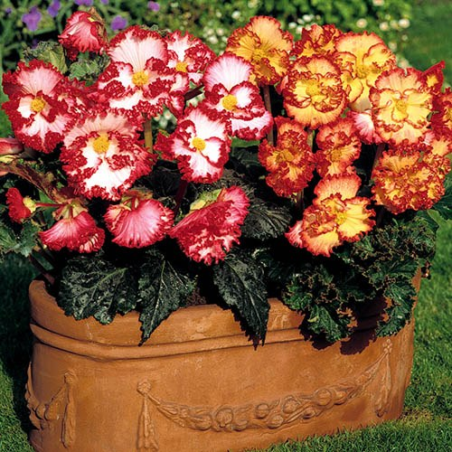
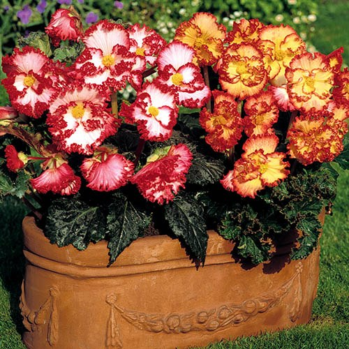

Common Name: Begonia Marginata
Botanical Name: Begonia-Marginata
 

Other references
RHS
Gardenia
Gardeners' World
yougarden
yougarden
Link
GROWING INSTRUCTIONS
| DESC | Description_PLACEHOLDER |
| SOW | SOW_INFO_PLACEHOLDER |
| CARE | CARE_INFO_PLACEHOLDER |
| FLOWERS | FLOWERS_DETAILS_PLACEHOLDER |
| TIP | tips tips_PLACEHOLDER |
Plant Care Information
Scented / Fragrant
Perfect In Pots
Plant In Sunshine
Protect From Frost
Easy To Grow
Top Tips
You can remove the single female flowers to encourage more of the large double male flowers to be produced
if you wish - although we like to leave them on for a fuller display.
Deadhead faded blooms to extend the flowering period.
Care Information
Planting Advice for your Begonia:
Begonia tubers will start into growth from February onwards. The easiest way is to put them into shallow
tray with a good quality compost which has been moistened.
Plant the tubers with the domed side downwards and the hollow uppermost. Shoots will start to emerge
depending on temperature. We recommend that you start them off in a warm room.
As soon as the shoots of the tubers are about 2cm (1in) long pot them up in 15cm (4in) pots. As soon as
the roots reach the sides of the pot, they're ready to go into containers. Alternatively, you can plant
the tubers straight into baskets and tubs where they are to flower.
When all risk of frost has passed, acclimatise begonia plants to outdoor conditions over a period of 7 to 10
days. Choose a sunny or semi shaded position that is protected from strong winds - a cold frame is ideal.
Grow on in full sun or partial shaded areas. The sunnier the site, the more vibrant the colours will be.
Aftercare Advice for Begonias:
For best results keep plants well-watered, and feed once every two weeks with a high potassium feed while in
flower, and deadhead regularly to encourage further flowers.
Water regularly during the summer - begonias thrive in moist soil. Take care not to over-water, as this will
cause new begonia flower buds to drop.
Deadhead the single female flowers to encourage more of the large double male flowers to be produced and to
extend the flowering period.
Sunshine yellow and pristine white flowers are edged with Fiery red, ruffled edges making this a begonia that is an absolute head turner - a variety that will certainly get your beds and borders noticed this year!
With a continuous display of ruffled, colourful blooms throughout the summer, 'Marginata' is a begonia quite like any other that you will see and makes a unique and eye-catching display.
Perfect for bringing brightness to dull corners of the garden or patio, this mix makes a colourful addition to your displays. Perfect in pots and baskets, they're easy to grow too making them the perfect choice for any gardener and any garden.
Lightly scented, they're a low maintenance way to add colour anywhere and with their lush green leaves and contrasting red-edged blooms, they make any planting scheme look amazing!
- Sunshine yellow and pristine white flowers are edged with Fiery red making this a begonia that is an absolute head turner
- 'Marginata' is a begonia quite like any other that you will see, and makes a unique and eye-catching display
- Perfect for bringing brightness to dull corners of the garden or patio, this mix makes a colourful addition to your displays
- Perfect in pots and baskets, they're easy to grow too making them the perfect choice for any gardener and any garden
- Supplied as a pack of 10 tubers, ready to pot up and grow on